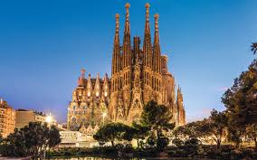
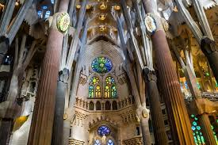
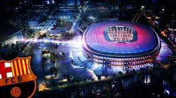
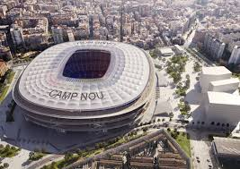

Barcelone
Barcelone est une ville cosmopolite espagnole reputée pour ses meiveilleux sites touristiques.Située en bordure de mer, elle est la capitale de la région de Catalogne mais egalement la destination de nombreux touristes.
A-Sagrada
C'est la première attraction à Barcelone.Cette cathédrale inachevée dont la construction a debuté en 1882 avec l'architecte Antoni Gaudí devrait être achevée en 2026.Sur 18 tours, 8 ont été constuites pour le moment.
Selon les données de l’année 2004, la Sagrada Família est le monument le plus visité d’Espagne; en 2012, elle a attiré plus de 3,2 millions de visiteurs.La crypte et la façade de la Nativité, ont été déclarées patrimoines de l’humanité par l’Unesco en 2005.


B-Le Camp nou
Le Camp nou qui signifie "nouveau stade" en Catalan est un stade de football située à Barcelone. Depuis son implantation, c'est le FC Barcelone qui y reside. Avec une capacité de près de 10000 places, c'est le plus grand stade d'Europe et le 12ème au monde. Classé comme un stade de catégorie 4 par l'UEFA, il reçoit de nombreux matchs internationaux faisant de lui un véritable centre d'intéret.

